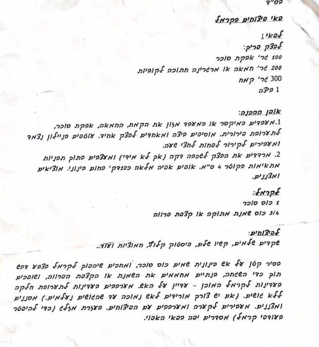

פאי פיצוחים בקרמל
— מהקלסר של תמר
פרווה

🔍 פתיחת הסריקה בגודל מלא

המתכון בכתב
התמלול נעשה אוטומטית מהסריקה ועדיין לא נבדק, אז ייתכנו בו טעויות. מילים מסומנות הן לא ודאיות. במקרה של ספק, הסריקה היא המקור.
מצרכים
לפאי: לבצק פריך
- 100 גר' אבקת סוכר
- 200 גר' חמאה או מרגרינה חתוכה לקוביות
- 300 גר' קמח
- 1 ביצה
לקרמל
- 1 כוס סוכר
- 3/4 כוס שמנת מתוקה או קצפת פרווה
לפיצוחים
- שקדים שלמים, קשיו שלם, פיסטוק קלוף, חמוציות וכו'..
אופן ההכנה
- מעבדים במיקסר או במעבד מזון את הקמח, החמאה, אבקת סוכר, לתערובת פירורית. מוסיפים ביצה ומאחדים לבצק אחיד. עוטפים בניילון נצמד ומעבירים לקירור לפחות לחצי שעה.
- מרדדים את הבצק לשכבה דקה (אך לא מידי) ומעצבים בתוך תבניות מתאימות בקוטר 4 ס"מ. אופים אפיה מלאה כ10דק' בחום בינוני. מוציאים ומצננים.
- בסיר קטן על אש בינונית שמים כוס סוכר, ומחכים שיהפוך לקרמל בצבע דבש תוך כדי השגחה, בנתיים מחממים את השמנת או הקצפת הפרווה, ושופכים בעדינות לקרמל המוכן - עדיין על האש.
- מערבבים בעדינות לתערובת חלקה ללא גושים.
- (אם יש צורך מורידים לאש נמוכה עד שהגושים נעלמים.)
- מסננים ומצננים.
- מעבירים לקערה ומערבבים עם הפיצוחים.
- בעזרת מזלג (כדי להיפטר בעודפי קרמל) מסדרים יפה בפאי האפוי.
הערות מהדף
- תבניות בקוטר 4 ס"מ